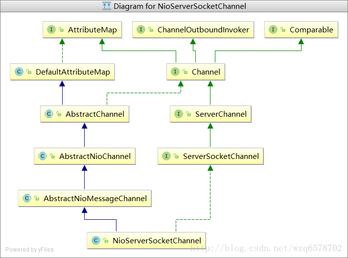
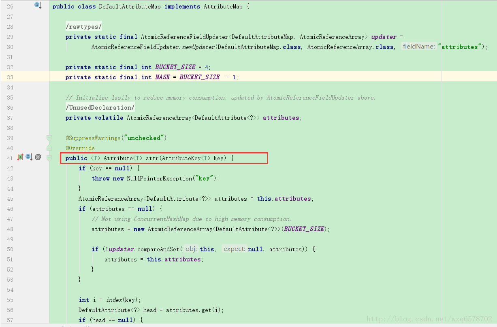

我们回到ServerBootstrap的init方法，之前介绍过Attribute的设置，那么Attribute的具体设置是怎样的呢：
1 | void init(Channel channel) throws Exception { |
我们在NioServerSocketChannel里边并没有找到attr方法，那么看一下NioServerSocketChannel层次关系：

在DefaultAttributeMap找到：
1 | public class DefaultAttributeMap implements AttributeMap { |
attr(AttributeKey
在NioServerSocketChannel还有一个 private final ServerSocketChannelConfig config;这样的一个生命，ServerSocketChannelConfig 用来设置ServerSocketChannel的一些配置信息的，可以看到ServerSocketChannelConfig 和Attribute共同完成了channel的配置。
类似：
1 | class Channel{ |
Channel与ChannelHandlerContext作用域分析
首先我们要知道netty4.0和netty4.1是不同的，4.1对ChannelHandlerContext.attr(..) 和 Channel.attr(..)的改进：
http://netty.io/wiki/new-and-noteworthy-in-4.1.html
ChannelHandlerContext.attr(..) == Channel.attr(..)
Both Channel and ChannelHandlerContext implement the interface AttributeMap to enable a user to attach one or more user-defined attributes to them. What sometimes made a user confused was that a Channel and a ChannelHandlerContext had its own storage for the user-defined attributes. For example, even if you put an attribute ‘KEY_X’ via Channel.attr(KEY_X).set(valueX), you will never find it via ChannelHandlerContext.attr(KEY_X).get() and vice versa. This behavior is not only confusing but also is waste of memory.
Channel 和ChannelHandlerContext都 实现了AttributeMap 用来设置用户自定义的属性。有时候Channel 和ChannelHandlerContext 都有自己的一套用户定义的属性（相互之间没有任何关系，即Channel 有自己的map，ChannelHandlerContext 也有自己的map）让用户感到非常困惑，比如我们使用 Channel.attr(KEY_X).set(valueX)设置一个key和value，但是没法通过ChannelHandlerContext.attr(KEY_X).get()方式获得，而且这样还浪费内存。
To address this issue, we decided to keep only one map per Channel internally. AttributeMap always uses AttributeKey as its key. AttributeKey ensures uniqueness between each key, and thus there’s no point of having more than one attribute map per Channel. As long as a user defines its own AttributeKey as a private static final field of his or her ChannelHandler, there will be no risk of duplicate keys.
为了解决这个问题，我们决定在每个Channel 内部只维护一个map，AttributeMap 永远使用AttributeKey 作为他的key，AttributeKey 保证在所有key之中是唯一的，这样就没有必要每个Channel定义多个属性，这样每个用户在ChannelHandler里边定义私有的静态属性的key（AttributeKey ）就没有重复键的问题。
我们看一下实际的代码是怎么写的：
Channel的实现类NioServerSocketChannel的父类DefaultAttributeMap的attr方法：

ChannelHandlerContext 实现类AbstractChannelHandlerContext的attr方法:
1 | abstract class AbstractChannelHandlerContext extends DefaultAttributeMap |
可以看到ChannelHandlerContext 和Channel用的都是Channel的attr，即：ChannelHandlerContext.attr(..) == Channel.attr(..)
到此为止netty的2大模块（初始化和注册）的初始流程解析完毕。接下来说一下注册流程。
1 | final ChannelFuture initAndRegister() { |